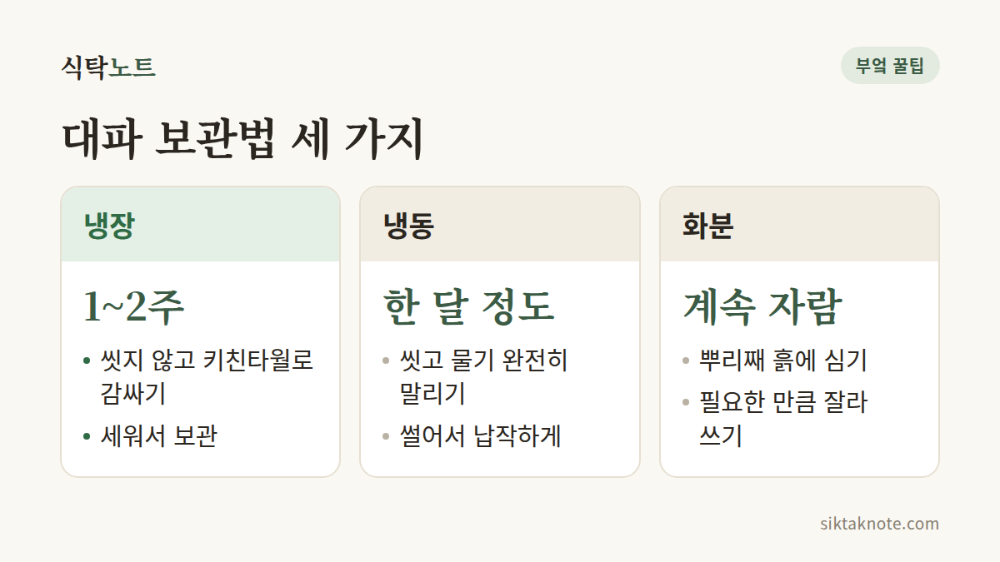

대파 오래 보관하는 법 — 냉장·냉동·화분 보관

3줄 요약
- 일주일 안에 쓸 대파는 씻지 말고 키친타월에 싸서 세워 냉장하세요.
- 오래 두려면 씻어서 물기를 완전히 말린 뒤 썰어서 냉동하세요. 해동 없이 바로 쓰면 됩니다.
- 미끈거리고 시큼한 냄새가 나면 그 부분은 잘라내고, 전체가 흐물하면 버리세요.

어떻게 해야 할까요
대파는 사 온 날 바로 손질해서 나눠 두는 게 좋아요. 쓰는 속도에 따라 냉장, 냉동, 화분 중에 고르시면 됩니다.
1. 일주일 안에 쓸 거라면 냉장
- 씻지 말고 겉에 묻은 흙만 털어요.
- 누렇게 시들거나 물러진 겉잎은 떼어냅니다.
- 키친타월이나 신문지로 감싸서 길쭉한 용기나 지퍼백에 담아요.
- 가능하면 세워서 냉장 보관하고, 키친타월이 축축해지면 새것으로 갈아주세요.
2. 오래 두려면 썰어서 냉동
- 대파를 씻은 뒤 키친타월로 물기를 꼼꼼히 닦거나 채반에서 충분히 말려요.
- 송송, 어슷, 큼직하게 등 자주 쓰는 모양으로 썹니다.
- 흰 부분과 초록 부분을 나눠 담으면 쓰기 편해요. 흰 부분은 볶음과 육수, 초록 부분은 국과 고명에 잘 어울려요.
- 지퍼백에 납작하게 펴서 냉동하세요. 얼고 나면 손으로 부숴 필요한 만큼만 쓸 수 있어요.
냉동 대파는 해동하지 말고 국, 찌개, 볶음에 바로 넣으세요.
3. 계속 키우고 싶다면 화분
뿌리가 붙은 대파는 흙에 심어 베란다에 두고, 필요할 때 위쪽만 잘라 쓰는 방법도 있어요. 뿌리 쪽을 5cm쯤 남기고 자른 뒤 물에 담가 두면 다시 올라오기도 합니다.

왜 그런지
대파는 속이 비어 있고 수분이 많아서, 겉에 물기가 남아 있으면 속부터 미끈하게 물러요. 그래서 순서가 중요해요. 냉장할 때는 씻지 않고, 냉동할 때는 씻되 물기를 완전히 없애는 거예요.

주의할 점
- 물기가 남은 채 냉동하면 대파끼리 얼어붙어 큰 덩어리가 됩니다.
- 냉동 대파는 식감이 부드러워져서 샐러드나 고명처럼 생으로 먹는 용도에는 맞지 않아요. 익혀 먹는 요리에 쓰세요.
- 겉이 미끈거리고 시큼한 냄새가 나면 그 부분을 잘라내세요. 전체가 흐물흐물하게 녹았다면 버리는 게 좋아요.
대파는 "씻지 않고 냉장, 말려서 냉동" 한 줄만 기억하면 됩니다.